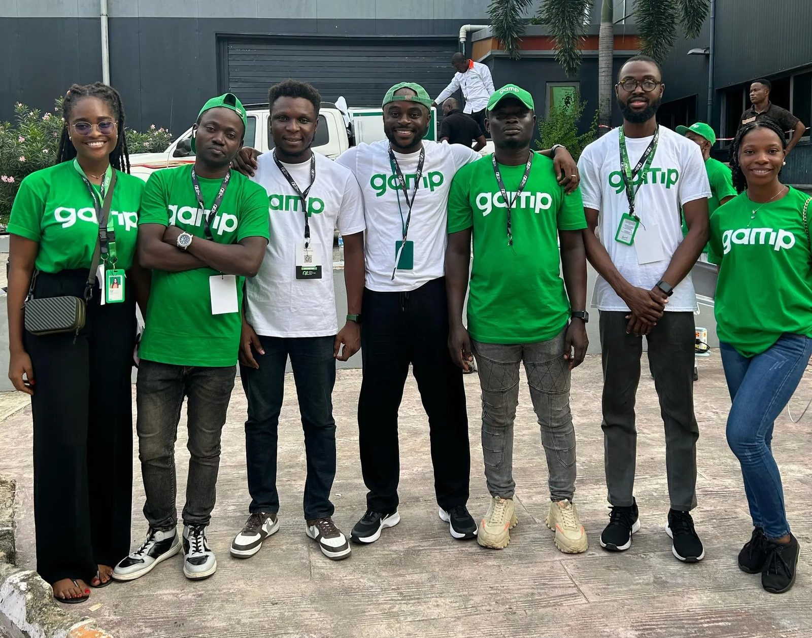

← All work
Projects
Marketing and project delivery at gamp
Leading a small marketing team and keeping cross-functional projects on schedule, with campaigns shaped by data and the community.
Organisationgamp technology
My roleMarketing Communications Specialist
TypeProjects
WhenJan – Jul 2024

What was going on
gamp needed marketing that grew awareness and brought in customers, and projects that shipped on time across marketing, sales and communications.
The challenge
Several teams, several deadlines, and a community that only responds to content it genuinely cares about.
What I did
- Led a team of four marketers through planning and running campaigns.
- Read the marketing data each cycle to see what was working and adjust the next campaign.
- Worked with sales and communications on content that felt like it came from the community, not at it.
- Kept projects on track with clear schedules and weekly stakeholder check-ins.
What changed
4Marketers led
WeeklyStakeholder reviews
—Engagement growth
Engagement figures to confirm.
What I took from it
Most project problems are communication problems. The right people knowing the right thing at the right time fixes a lot.
In their words
“Favour, I wanted to say you were a great addition to the team. Good luck in all your future endeavors, and let me know whenever you need me or the team.”
Next case study
Lagos Liga →